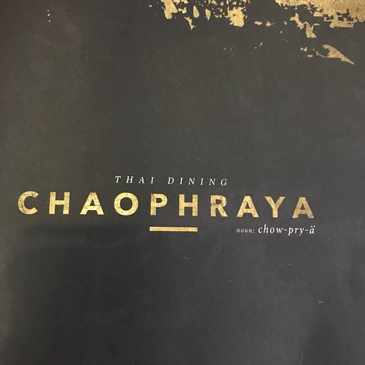
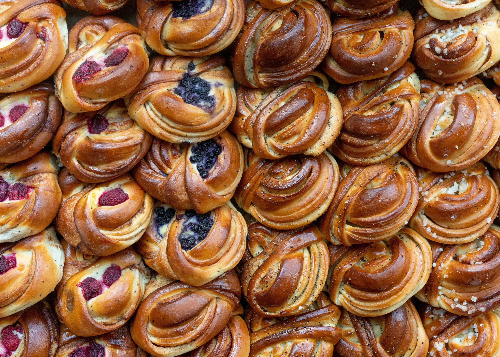
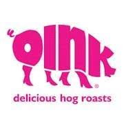
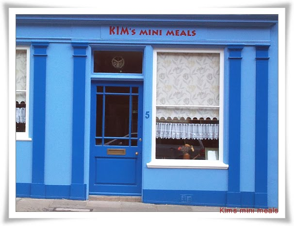

Food and Drink
Hello! There are lots of places to eat out in Edinburgh. Here there is a list of our favorites with some links. Hope you enjoy it!
-

Chaophraya
Best for: Special occations, Thai
Location: 4th Floor 33 Castle Street, Edinburgh EH2 3DN Scotland
Contemporary Thai food fine dining in an inspirational Thai restaurant.
-

Soderberg
Best for: Cafe, Sweden
Location: 27 Simpson Loan and 1 Lister Square, Edinburgh EH3 GLD Scotland
A menu of classic café fare, drinks & an array of Swedish pastries in a modern setting with a patio.
-

Oink
Best for: Budget, British
Location: 34 Victoria Street, Grassmarket, EH1 2JW; 82 Canongate, EH8 8BZ; and 38 Hanover Street, EH2 2DR
With three stores in Edinburgh, Oink is the best place for a budget quick lunch. Dificult to miss as they have a whole roast pig on display, Oink has achieved a legendary status in Edinburgh with their rolls jam-packed with pork, crackling and stuffing
-

Kims Mini Meals
Best for: Korean
Location
Tiny restaurant, must try their ribs
-
The Witchery
Best for: Special occations, Scottish
Location
The Witchery is located at the top of the Royal Mile. The Witchery's unique l ocation and legendary food have ensured it has become a fine dining experience.